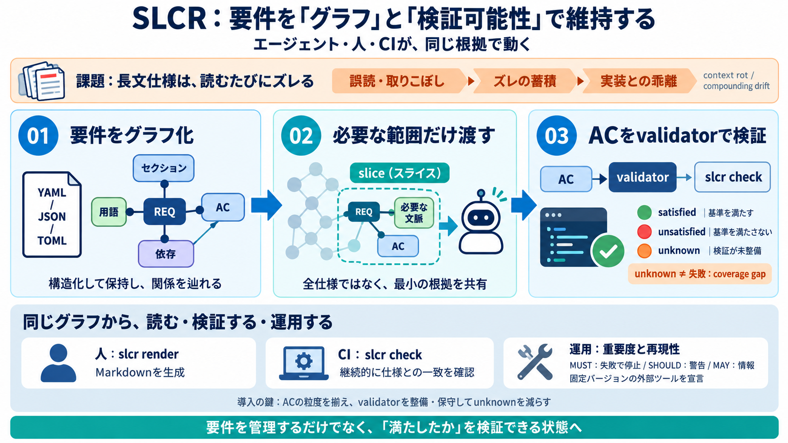

Schema Validation for TOML | JSON Schema Everywhere
### JSON ``` { "id": 2, "name": "An ice sculpture", "price": 12.5, "tags": [ "cold", "ice" ], "dimensions": …

AI/人が読むときに、必要な根拠まで届かない。
「コードが何を満たすべきか」が曖昧になりやすい。
満たすべき要求。
位置づけと導入経路。
誤解を減らす最小根拠。
セクション・REQ・AC・用語を分離して保持。
slice抽出や依存関係の参照を一貫化。
validatorの宣言・紐づけを管理。
“仕様が満たされたか”を機械的に評価。
validatorが受け入れ基準を満たす。
受け入れ基準が満たされない。
検証できるvalidatorが未存在。
MUST / MUST NOTは失敗扱い。
警告（warning）として扱える。
情報（info）として運用。
各REQのACをvalidatorが判定。
レンダリング差分（--expect-no-diff）で更新漏れを検知。
ツール更新による挙動差を減らす。
ディスクリプタ作成コストが発生する。
エージェントが参照する根拠とズレにくい。
レンダリング差分が“更新の取りこぼし”のサイン。
coverage gapを減らすため、validatorを先に整備。
ACの粒度ガイドやチーム合意がないと誤実装の余地が残る。
この要約は、ユーザー提供のREADME要約（SLCRの概念：slice、validator、satisfied/unsatisfied/unknown、MUST/SHOULD/MAY、slcr check/render、pinned tools、CI運用）に基づきます。
RFC 2119系のモダリティ（MUST/SHOULD/MAY）という前提で、段階的運用の考え方が説明されています。
本文中に登場する具体オプション例：--deny-warnings / --expect-no-diff（ユーザー提供テキストより）。
### JSON ``` { "id": 2, "name": "An ice sculpture", "price": 12.5, "tags": [ "cold", "ice" ], "dimensions": …
## FAQs about Slcr-lasertechnik Gmbh Accel Partners Partech IN-Q-TEL - US Fujitsu Tenity Stanford [...] JavaScript is d…
!(data:image/png;base64,iVBORw0KGgoAAAANSUhEUgAAAAsAAAAOCAYAAAD5YeaVAAAAAXNSR0IArs4c6QAAAAZiS0dEAP8A/wD/oL2nkwAAAAlwSFlz…
Title: SLCR ASSOCIATES LIMITED persons with significant control - Find and update company information - GOV.UK ## Cookie…
Title: Ams Equipment Repair & Slcr, 1455 Edgewood Cir, Jacksonville, FL 32205, US - MapQuest Download on the App Store. …